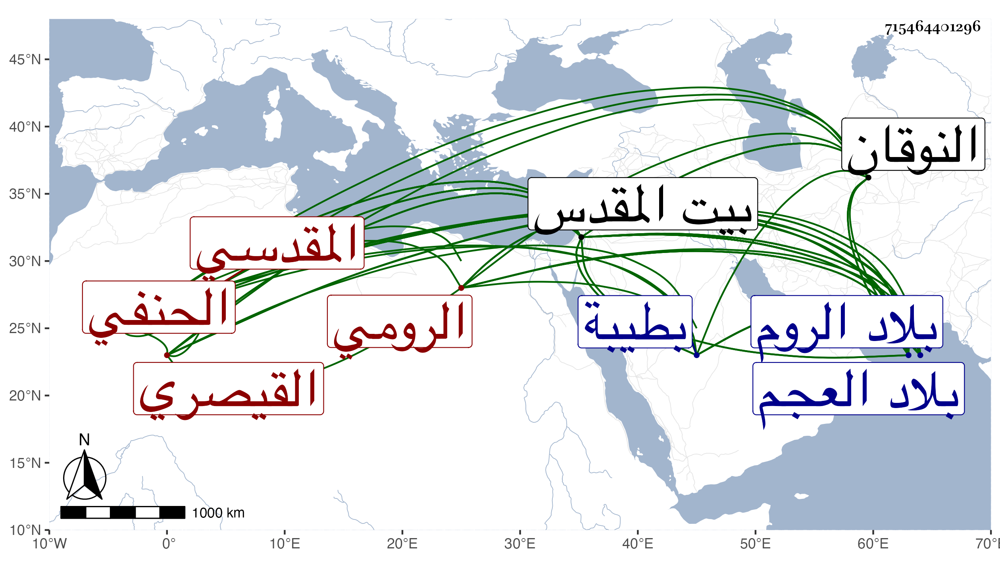

0902Sakhawi.DawLamic.ITO20230111-ara1.EIS1600.715464401296
Biography ID: 715464401296
918
سراج بن مسافر بن زكريا بن يحيى بن اسلام بن يوسف سراج الدين القيصري الرومي ثم المقدسي الحنفي ويسمى أيضا ضياء وعوض ولكنه لم يشتهر بواحد منهما . ولد سنة تسعين أو بعدها تقريبا وقيل سنة خمس وتسعين بالمشهد من الروم ، ونشأ هناك فاشتغل كثيرا ثم ارتحل إلى بلاد العجم فقرأ بها العلوم العقلية ، وعاد فلزم الفنري حتى كان يعد من أعيان جماعته ومما أخذه عنه الفقه والاصلان والنحو والصرف والمعاني والبيان ، وقرأ شرح المجمع لابن فرشتا على مؤلفه وكذا أخذ عن الشيخ محمد بن أبيه أحد أصحاب صاحب درر البحار واشتغل أيضا في الفرائض وغيرها ، وتصدر للتدريس فدرس مدة ، ثم بعد توغله في العقليات ومشاركته الجيدة في الشرعيات تجرد وسلك طرق التصوف فصحب جماعة منهم الزين أبو بكر الخافي ، وتوجه صحبته إلى الحج ثم عاد فقدم بيت المقدس سنة ثمان وعشرين مجردا بقصد الاقامة بها للتعبد فكان القادمون إليها من الروم للزيارة يعظمون شأنه فتنبه المقادسة وغيرهم له ولا زال يتلطف به من له رغبة في الاشتغال والاستفادة إلى أن عاود التدريس والافادة فأقبل الناس عليه وظهر تقدمه في فنون منها علم الكلام والمنطق والمعاني والبيان والنحو والصرف ومشاركته في غيرها وانتفع الناس به حتى قل أن يكون في الفضلاء والطلبة من لم يقرأ عليه واستغرق جل أوقاته في ذلك ، وممن أخذ عنه صاحبنا الكمال بن أبي شريف وقال أنه كان محررا لما يلقيه ويذاكر به ناصحا في تعليمه ، علامة في حل التراكيب المشكلة ، ذا قوة في النظر ، له ممارسة جيدة لفقه مذهبه مديم الاشغال والاشتغال في كتب منه معتبرة ، كثير المراجعة للهداية وشروحها ولشرح الكنز للزيلعي وشغف بتلخيص الجامع للخلاطي فكان يقرأ عليه فيه وكتب عليه قطعة جيدة ، وكتب أيضا بخطه كثيرا كالبخاري وكان معتنيا بالنظر فيه وفي شروحه وفي شرح مسلم للنووي والهروي وبالمصابيح وشروحه وبالكشاف وتفسير القاضي وغيرهما ويراجع الفخر الرازي وغيره عند إقراء الكشاف وحواشيه مع الاكثار من مطالعة الاحياء وكان يبالغ في التحذير من كلام ابن عربي ويذكر أنه خالط المشتغلين بكلامه في بلاد الروم وغيرها ووجد كثيرا منهم زائفا يتستر بالتأويل ظاهرا وهو في الباطن غير مؤول بل يعتقد ما هو أقبح من الكفر ووجد بعضهم واقعا في الغلط . وكان بعد شيخه الفنري مع علو مقامه في العلم ممن غلط في أمر ابن عربي وأشباهه ، وكان ينظر فيما كتبه ابن تيمية في الرد على ابن عربي ويثنى على رده وكتب هو أيضا في الرد عليه كتابة جيدة . وله نظم متوسط ونثر يستكثر على كثير من أهل الروم ، وبنيت له مدرسة ببيت المقدس بنتها له امرأة من نساء وزراء الروم تعرف بخانم العثمانية بالخاء المعجمة فأقام بها إلى أن توفيت فآل النظر إلى ولدها ، وكان فيما يقال يميل إلى ابن عربي فاتصل به مبالغة الشيخ في التحذير منه لأن ذلك كان دأبه سيما مع الواردين من الروم ، فكان هذا باعثا للولد على صرفه عن الدرس فلم يكترث الشيخ بذلك بل ظهر منه السرور به لكونه سببا لحمايته عن تناول ريع وقفه ، وكان رحمه الله متين الديانة يأمر بالمعروف وينهى عن المنكر مواظبا على الخير إلى أن مات في سنة ست وخمسين ودفن بباب الرحمة شرقي المسجد الأقصى . انتهى ملخصا . وقال غيره كان متين الديانة عفيفا عن الوظائف وما في أيدي الناس ذا ورع زائد وانقطاع عن الناس وتخل واطراح ولطافة وصدق وصحة اعتقاد وترك للتكلف ، مع الاحسان للطلبة والمحاسن الجمة حتى قال الشيخ عبد القادر النووي ما أعلم أحدا اجتمعت فيه العدالة الظاهرة والباطنة بعد ابن رسلان غيره ، وشرع في شرح مختصر الجامع الكبير وأدخل فيه علوما على أسلوب جيد وهو جدير بقول القائل :
| وحل من المجد المؤثل رتبة | يقصر عن إدراكها نظر الطرف |
وقد لقيته ببيت المقدس فسمعت من فوائده ، وكان علامة صالحا نيرا سليم الفطرة إلى الغاية مديم الاشتغال والافادة لكن أكثر ذلك لأبناء جنسه للكنة كانت في لسانه وعدم طلاقة ، وذكر أن جده الأعلى يوسف مدفون بطيبة رحمه الله وإيانا .
